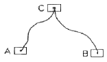
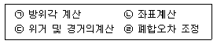
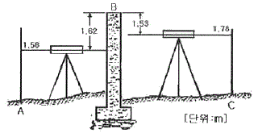
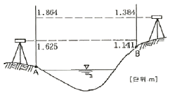
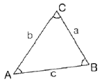
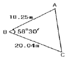
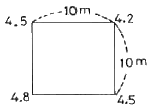
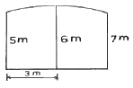

측량기능사 (2012-02-12 기출문제)
1과목: 임의 구분
1. 여러가지 좌표계 중 영국 그리니치 천문대를 지나는 본초 자오선과 적도의 교점을 원점으로 지구 상의 어떤점의 절대적 위치를 표시하는 데 일반적으로 사용되는 좌표계는?
- 수평 직각 좌표계
- 평면 직각 좌표계
- 3차원 직각좌표계
- 경위도좌표계
(정답률: 79%)

2. 종단수준측량에 대한 설명으로 틀린 것은?
- 철도,도로,하천 등과 같은 노선을 따라 각 측점의 고저차를 측정하는 측량을 말한다.
- 종단수준측량은 종단면도를 작성하기 위한 측량이다.
- 종단수준측량은중간점이 많아 기고식으로 작성하는 것이 편리하다.
- 각 측점에서 중심선에 직각방향으로 지표면의 고저차를 측정하는 측량을 말한다.
(정답률: 58%)
3. 삼각측량의 작업 순서로 옳은 것은?
- 답사 및 선점 – 조표 – 관측 – 계산 –성과표 작성
- 조표 – 성과표작성 – 답사 및 선점 – 관측 – 계산
- 조표 – 관측 – 답사 및 선점 – 성과표 작성 – 계산
- 답사 및 선점 – 관측 – 조표 – 계산 – 성과표 작성
(정답률: 77%)
4. 수준측량 오차에서 기계적 원인에 의한 오차가 아닌 것은?
- 시준이 불완전하다.
- 레벨의 조정이 불완전하다.
- 기포가 둔감하다.
- 기포관 곡률이 균일하지 않다.
(정답률: 71%)
5. 광파기를 이용하여 100M 거리를 ±0.0001m의 오차로 측정하였다면, 동일한 조건으로 10km의 거리를 측정할 경우, 연속 측정값에 대한 오차는 얼마인가?
- ±0.01m
- ±0.001m
- ±0.0001m
- ±0.00001m
(정답률: 64%)
6. 각의 측정에서 한 측점에서 관측해야 할 방향(측점)의 수가 6개일 경우, 각관측법(조합각 관측법)에 의해서 측정되어야 할 각의 총수는?
- 12개
- 15개
- 18개
- 21개
(정답률: 54%)
7. 두개의 수준점 A점과 B점에서 C점의 높이를 구하기 위하여 직접수준측량을 하여 A점으로부터 높이 75.363m(거리 2km), B점으로부터 높이 75.377m(거리 5km)의 결과를 얻었을 때 C점의 보정된 높이는?

- 75.364m
- 75.367m
- 75.370m
- 75.373m
(정답률: 62%)
8. 트래버스 측량의 내업 순서로 옳은 것은?

- ㄴ → ㄱ → ㄷ → ㄹ
- ㄱ → ㄷ → ㄴ → ㄹ
- ㄴ → ㄱ → ㄹ → ㄷ
- ㄱ → ㄷ → ㄹ → ㄴ
(정답률: 59%)
9. 평판측량의 특징으로 옳지 않은 것은?
- 기계의 조작이 비교적 간단하다.
- 다른 측량에 비해 정확도가 높다.
- 현장에서 측량이 잘못된 곳을 발견하기 쉽다.
- 외업에 많은 시간이 소요 된다.
(정답률: 83%)
10. 측선 AB의 거리가 65m 이고 방위가 S 80° E 이다. 이 측선의 위거와 경거는?
- 위거= -64.013m, 경거= 11.287m
- 위거= 11.287m, 경거= -64.013m
- 위거= 64.013m, 경거= -11.287m
- 위거= -11.287m, 경거= 64.013m
(정답률: 51%)
11. 배횡거를 이용한 면적 계산에 관한 설명 중 옳지 않은 것은?
- 각 측선의 중점에서부터 자오선에 투영한 수선의 길이를 횡거라 한다.
- 어느측선의 배횡거는 하나 앞측선의 배횡거에 하나 앞 측선의 경거와 그 측선의 경거를 더한값이다.
- 실제의 면적은 배면적을 2로 나눈 값이다.
- 배면적은 각 측선의 경거에 각 측선의 배횡거를 곱하여 합산한 값이다.
(정답률: 46%)
12. 표준자보다 2.5cm 긴 50m 줄자로 거리를 잰 결과가 2⑤m 이었다면 실제거리는 몇 m인가?
- 204.898m
- 204.975m
- 2⑤.000m
- 2⑤.103m
(정답률: 62%)
13. 트래버스 측량의 폐합비 허용범위는 목적과 조건에 따라 다르다. 일반적으로 시가지에 적용되는 허용범위는?
- 1/5000 ~ 1/10000
- 1/1000 ~ 1/2000
- 1/500 ~ 1/1000
- 1/300 ~ 1/1000
(정답률: 62%)
14. 그림 A, C 사이에 연속된 담방이 가로막혔을 때의 수준측량시 C점의 지반고는? (단, A점의 지반고 10m 이다. )

- 9.89m
- 10.62m
- 11.86m
- 12.54m
(정답률: 59%)
15. 트래버스 측량에서 제2상한의 방위각 (α)을 방위로 계산하는 방법으로 옳은 것은?
- S α E
- S(180°- α )E
- N( α- 180° )W
- N(360° - α)W
(정답률: 84%)
16. 기준면으로부터 표고를 결정하여 놓는 측표는?
- 수준점
- 시준점
- 수평점
- 지평점
(정답률: 73%)
17. 평판을 세울 때의 오차가 아닌 것은?
- 정준오차
- 구심오차
- 표정오차
- 외심오차
(정답률: 81%)
18. 삼각점의 선점에 필요한 조건으로 옳지 않은 것은?
- 삼각점 상호간에 시준이 잘되는 곳
- 위치는 견고한 지반으로 계속되는 작업에 편리한 곳
- 되도록 측점 수가 적고 세부측량 등의 후속되는 측량에 이로운 곳
- 삼각점에 의하여 형성되는 삼각형의 한 내각이 20° 이내인 곳
(정답률: 84%)
19. 한 지점에 평판을 세우고 여러 측점을 시준하여 방향과 거리를 측정하여 도면을 만드는 방법으로 시준이 잘되고 협소한 지역에 적당한 평판측량 방법은?
- 방사법
- 전진법
- 전방교회법
- 후방교회법
(정답률: 75%)
20. 평판측량의 교회법에 관한 설명으로 옳지 않은 것은?
- 측량구역 내에서 적당한 기준점을 두 점 이상 취한다.
- 기지점으로부터 미지점을 시준하여 방향선을 교차시켜 도면상에서 미지점의 위치를 결정한다.
- 미지점까지의 거리측정이 필요하고, 평판설치 횟수가 많아 시간이 많이 소요된다.
- 복잡한 지형에서는 도상에 많은 방향선을 긋게 되므로 부적당하다.
(정답률: 49%)
2과목: 임의 구분
21. 두 점간의 경사거리가 30m 이고, 고저차가 30cm 일 때 경사보정량은?
- -0.0015m
- -0.0035m
- -0.0045m
- -0.0065m
(정답률: 64%)
22. 삼각형의 내각을 측정하였더니 ∠A=68° 01' 10", ∠B=51° 59' 00", ∠C=60˚ 00' ⑤" 가 되었다. 각 보정후의 ∠B는?
- 51° 58' 50"
- 51° 58' 55"
- 51° 59' 00"
- 51° 59' ⑤"
(정답률: 58%)
23. 다음 중 삼각측량의 특징으로 틀린 것은?
- 넓은 면적의 측량에 적합하다.
- 넓은 지역에 동일한 정밀도로 기준점을 배치하기에 적당하다.
- 삼각점은 서로 시통이 잘되고 후속측량에 이용이 편리하도록 전망이 좋은 곳에 설치한다.
- 조건식이 적어 조정계산이 간단하다.
(정답률: 75%)
24. 하천 양안에서 교호수준측량을 실시하여 그림과 같은 결과를 얻었다. A점의 지반고가 50.250m일 때 B점의 지반고는?

- 49.768m
- 50.250m
- 50.732m
- 51.082m
(정답률: 65%)
25. 삼각망의 조정에 대한 설명 중 옳은 것은?
- 삼각망을 구성하는 각각의 삼각형 내각의 합은 180˚가 되어야 한다.
- 하나의 측점 주위에 있는 모든 각의 합은 540˚ 가 되어야 한다.
- 삼각망 중에서 임의 한 변의 길이는 계산 순서에 따라 달라진다.
- 삼각망의 조건식에는 자유조건식, 구속조건식, 평균조건식이 있다.
(정답률: 71%)
26. 트래버스 측량의 수평각 관측방법 중 서로 이웃하는 두 개의 측선이 이루는 각을 관측해 나가는 방법으로 트래버스 측량에서 주로 사용되는 방법은?
- 교각법
- 편각법
- 방위각법
- 폐합법
(정답률: 67%)
27. 높은 정확도를 요구하는 대규모 지역의 측량에 이용되는 트래버스는?
- 개방 트래버스
- 폐합 트래버스
- 결합 트래버스
- 수렴 트래버스
(정답률: 75%)
28. 삼각망 중에서 정밀도가 가장 높은 것은?
- 단 삼각망
- 유심 삼각망
- 단열 삼각망
- 사변형 삼각망
(정답률: 86%)
29. 트래버스 측량에서 편각으로부터 방위각을 구하는 계산공식으로 옳은 것은? (단, 우 편각을 (+), 좌 편각을 (-)로한다.)
- (어느 측선의 방위각) = (하나 앞의 측선의 방위각) + 180° - (그 측점의 편각)
- (어느 측선의 방위각) = (하나 앞의 측선의 방위각) + 180° + (그 측점의 편각)
- (어느 측선의 방위각) = (하나 앞의 측선의 방위각) + (그측점의 편각)
- (어느 측선의 방위각) = (하나 앞의 측선의 방위각) - 180° - (그 측점의 편각)
(정답률: 39%)
30. 거리 1km에서 각도 오차가 1분이라면 위치오차는?
- 0.1m
- 0.2m
- 0.3m
- 0.4m
(정답률: 39%)
31. 측량을 넓이에 따라 분류할 때, 지구의 곡률을 고려하여 실시하는 측량을 무엇이라 하는가?
- 공공측량
- 기본측량
- 측지측량
- 평면측량
(정답률: 81%)
32. 삼각형 ABC에서 기선 a를 알고 b변을 구하는 식으로 옳은 것은?

- log b = log a + log sin B – log sin A
- log b = log a + log sin A – log sin B
- log b = log a + log sin B – log sin C
- log b = log a + log sin A – log sin C
(정답률: 51%)
33. 데오드라이트(세오돌라이트)의 세우기와 시준시 유의사항에 대한 설명으로 옳지 않은 것은?
- 삼각대는 대체로 정삼각형을 이루게 하여 세운다.
- 망원경의 높이는 눈의 높이보다 약간 낮게 한다.
- 기계 조작시 몸이나 옷이 기계에 닿지 않도록 주의 한다.
- 정확한 관측을 위해 한쪽 눈을 감고 시준한다.
(정답률: 72%)
34. 수준측량의 용어에 대한 설명으로 옳지 않은 것은?
- 알고 있는 점에 세운 표척의 눈금을 읽는 것을 후시라 한다.
- 표고를 구하려고 하는 점에 표척의 눈금을 읽는 것을 전시라 한다.
- 기계를 고정시켰을 때 기준면에서 망원경 시준선까지의 높이를 기계고라 한다.
- 전시만 취하는 점으로 표고를 관측할 점을 이기점 (turning point) 이라 한다.
(정답률: 81%)
35. 수준측량 시 전∙후시 거리를 같게 취해도 제거되지 않는 오차는?
- 레벨의 조정이 불완전하여 시준선이 기포관축과 평행하지 않아 발생하는 오차
- 지구의 곡률오차
- 표척의 침하에 의한 오차
- 빛의 굴절오차
(정답률: 41%)
36. 노선을 선정할 때 유의해야 할 사항 중 틀린 것은?
- 노선은 될 수 있는 대로 직선으로 한다.
- 배수가 잘 되는 곳이어야 한다.
- 절토 및 성토의 운반거리가 길어야 한다.
- 토공량이 적고, 절토와 성토가 균형을 이루게 한다.
(정답률: 87%)
37. 노선측량에서 노선이 통과하는 평면 위치의 중심에 보통 몇 m 간격으로 중심 말뚝을 설치하는가?
- 5m
- 20m
- 40m
- 100m
(정답률: 83%)
38. 축척 1:50000 지형도의 도면에서 표고 395m와 2⑤m 사이에 주곡선 간격이 등고선은 몇 개가 들어 가는가?
- 9개
- 10개
- 19개
- 20개
(정답률: 48%)
39. 축척 1:50000 지형도에서 200m 등고선 상의 A점과 300m 등고선 상의 B점간의 도상의 거리가 10cm 이었다면 AB점간의 경사도는?
- 1/5
- 1/10
- 1/50
- 1/100
(정답률: 52%)
40. 단곡선 설치에서 곡선 시점(B, C)에서 종점(E, C)까지의 직선거리를 구하는 식은? (단, R=곡선 반지름, I=교각)
- R × tanI/2
- R × (sec I/2–1)
- R × (1-cos I/2)
- 2R × sin I/2
(정답률: 38%)
3과목: 임의 구분
41. A,B 점의 표고가 각각 84.5m, 120.5m 이고 두 점간 수평거리가 72m일 때 A점으로부터 수평거리 60m 떨어진 지점의 표고는?
- 114.5m
- 116.5m
- 120.7m
- 127.7m
(정답률: 36%)
42. 그림과 같은 ∆ABC의 두변과 협각을 측정하였다. ∆ABC의 넓이는?

- 128.688m2
- 155.918m2
- 158.865m2
- 182.865m2
(정답률: 57%)
43. 체적 계산에서 넓은 지역이나 택지 조성 등의 정지 작업을 위한 토공량을 계산하는 데 주로 사용하는 방법으로 , 전 구역을 직사각형이나 삼각형으로 나누어서 토량을 계산하는 방법은?
- 단면법
- 점고법
- 지거법
- 횡거법
(정답률: 63%)
44. 철도에서 차량이 곡선 위를 달릴 때 뒷바퀴가 앞바퀴보다 항상 안쪽을 지나게 되므로 직선부보다 넓은 도로 폭이 필요하게 되는데 이 크기를 무엇이라 하는가?
- 플랜지(flange)
- 슬랙(slack)
- 캔트(cant)
- 편물매
(정답률: 50%)
45. GPS의 일반적인 특징에 대한 설명으로 틀린 것은?
- 3차원 측량을 동시에 할 수 있다.
- 지구상 어느곳에서나 이용할 수 있다.
- 하루 24시간 어느 시간에서나 이용이 가능하다.
- 두 측점 간의 시통에 어려움이 있으면 기선 결정에 영향을 받는다.
(정답률: 80%)
46. GPS 위성의 신호에 대하여 설명한 것 중 틀린 것은?
- L1과 L2의 반송파가 있다.
- 변조된 코드 신호가 존재한다.
- L1신호의 주파수가 L2 신호의 주파수 보다 작다.
- 위성의 위치정보가 들어 있는 신호는 방송궤도력이다.
(정답률: 58%)
47. 노선측량에서 교각(I)=60° 20' , 곡선반지름(R)=100m 일 때 외할(E)은?
- 13.25m
- 15.66m
- 17.45m
- 19.26m
(정답률: 47%)
48. 가로 10m , 세로 10m의 정사각형 토지에 기준면으로부터 각 꼭지점의 높이의 측정 결과가 그림과 같을 때 전토량은?

- 225m3
- 450m3
- 900m3
- 1250m3
(정답률: 67%)
49. 완화곡선의 설치에 대한 설명으로 잘못된 것은?
- 원심력에 의한 탈선을 방지한다.
- 곡선부와 직선부 사이에 위치한다.
- 직선부보다 도로 폭을 넓혀 준다.
- 도로 바깥쪽을 낮추어 준다.
(정답률: 68%)
50. 도로공사 중 A단면의 성토면적이 24m2, B단면의 성토 면적이 12m2 일 때 성토량은? (단, A,B 두 단면간의 거리는 20m이다. )
- 120m3
- 240mm3
- 360mm3
- 480m3
(정답률: 59%)
51. 그림의 면적을 심프슨(simpson) 제 1법칙으로 구한 값은?

- 12m2
- 24m2
- 36m2
- 48m2
(정답률: 50%)
52. 곡선을 포함되는 위치에 따라 구분할 때, 수평면 내에 위치하는 곡선을 무엇이라 하는가?
- 평면 곡선
- 수직 곡선
- 횡단 곡선
- 종단 곡선
(정답률: 64%)
53. 단곡선 설치에서 I.P까지의 추가 거리가 200.38m , C.L=150.14m , T.L=100.38m 일 때, E.C 까지의 추가거리는?
- 100.00m
- 150.62m
- 250.14m
- 350.28m
(정답률: 46%)
54. 지형을 표시하는데 기준이 되는 등고선의 명칭과 표시 방법으로 옳은 것은?
- 계곡선-긴 파선
- 주곡선-일점 쇄선
- 계곡선-가는 점선
- 주곡선-가는 실선
(정답률: 63%)
55. 지형의 표시 방법 중 짧은 선으로 지표의 기복을 표시하는 방법은?
- 채색법
- 우모법
- 점고법
- 등고선법
(정답률: 66%)
56. 등고선의 간격을 결정할 때 고려사항과 거리가 먼 것은?
- 지형
- 측량의 목적
- 수평거리
- 축척
(정답률: 34%)
57. 정확한 위치를 알고 있는 인공위성에서 발사된 전파를 수신하여, 지상의 미지점에 대한 3차원 위치를 구하는 측량을 무엇이라 하는가?
- VLBI측량
- EDM측량
- GIS측량
- GPS측량
(정답률: 83%)
58. 주로 곡선으로 둘러싸인 면적을 구하려고 할 때 사용하는 면적계산법과 거리가 먼 것은?
- 좌표에 의한 방법
- 모눈 종이법
- 횡선법(strip)
- 지거법
(정답률: 37%)
59. GPS 위성 궤도의 고도는 약 얼마인가?
- 12200km
- 16400km
- 20200km
- 24000km
(정답률: 81%)
60. 편각법에 의한 단곡선에서 곡선반지름 R=200m, 교각 I=60° 이고 시단현의 길이 ℓ1=17.34m 일 때, 시단현의 편각 δ1은?
- 2° 29' 02"
- 2° 42' 02"
- 3° 29' 25"
- 3° 42' 25"
(정답률: 26%)